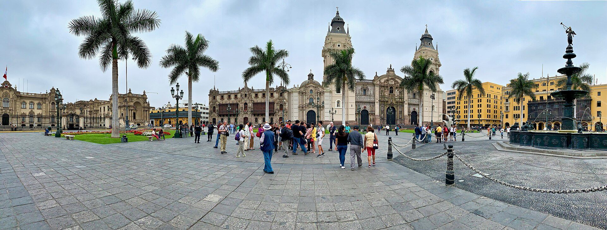

Derechos e igualdad
Promovemos el respeto de los derechos de la persona, la igualdad entre hombres y mujeres y la eliminación de toda forma de violencia y discriminación.
Conocer más
Somos una asociación civil sin fines de lucro, de carácter nacional, que reúne a ciudadanas y asociaciones comprometidas con los derechos, la igualdad y el desarrollo integral de la mujer y la familia en el Perú.

El Consejo Nacional de Mujeres del Perú (CNMP) es una asociación civil de carácter nacional y una organización no gubernamental sin fines de lucro, conformada por ciudadanas y asociaciones que se identifican con sus fines.
Desde 1926 está afiliado al Consejo Internacional de Mujeres (CIDEM), con sede en París, y es la única institución que representa a la mujer peruana ante el CIDEM y ante el Consejo Regional de Mujeres de las Américas (CRA).
Los fines y objetivos que establece nuestro estatuto se concretan en el trabajo de nueve comisiones permanentes.
Promovemos el respeto de los derechos de la persona, la igualdad entre hombres y mujeres y la eliminación de toda forma de violencia y discriminación.
Conocer másCongresos, seminarios y foros que preparan e incentivan a las mujeres a participar en la vida pública del país.
Conocer másAcciones de bienestar social y proyección a la comunidad en favor de la mujer, el menor, la familia y el adulto mayor.
Conocer másFunción conciliadora, capacitación extrajudicial, consultorios jurídicos y promoción de microempresas.
Conocer másDe la lucha por el voto femenino a la Plaza del Rosario y al presente: hitos de una institución centenaria.
El 3 de marzo, durante la visita a Lima de Carrie Chapman Catt, se constituye el Consejo Nacional de Mujeres del Perú. María Jesús Alvarado asume la secretaría y Mercedes Gallagher de Parks la presidencia del comité directivo.
El Consejo se afilia al Consejo Internacional de Mujeres (CIDEM), con sede en París, manteniendo su autonomía interna. Desde entonces es la única institución que representa a la mujer peruana ante el CIDEM y ante el Consejo Regional de Mujeres de las Américas (CRA).
El 7 de septiembre se promulga la Ley 12391, que reconoce a las peruanas el derecho a elegir y ser elegidas, una causa que el Consejo impulsó desde sus orígenes. En 1956 las mujeres votan por primera vez en elecciones nacionales.
El Consejo lidera la construcción de la Plaza del Rosario, en Jesús María, con motivo de la segunda visita de San Juan Pablo II al Perú. Es inaugurada el 13 de mayo y bendecida por el Papa el 14 de mayo de 1988.
Juramenta en ceremonia solemne el Consejo Directivo para el periodo 2025–2027, presidido por María Amelia Asenjo Azpilcueta.
Ceremonias, actividades y novedades de la vida institucional.
Afíliate como asociada, integra a tu asociación o apoya nuestras actividades. Cada mujer que se suma fortalece a todas.